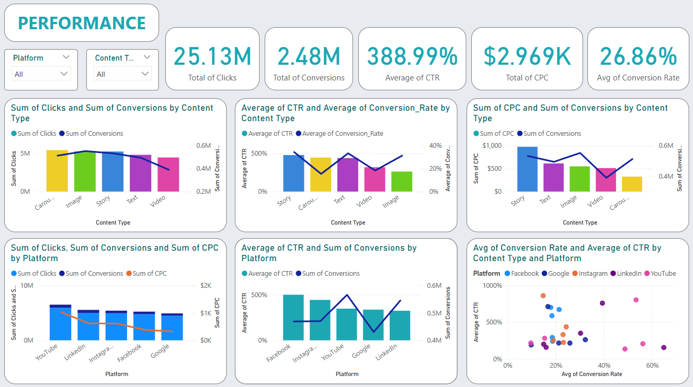

The Advertising Campaign Performance Data Analyst is responsible for analyzing the performance of digital advertising campaigns with the aim of optimizing marketing strategies. This role involves processing data from various advertising platforms (such as Google Ads, Facebook, YouTube, and LinkedIn), generating key metrics such as CTR (Click-Through Rate), CPC (Cost per Click), and conversion rate.
Notes
You can view or download the raw data from Kaggle at the following link Datasets, and files in .pbix (Power BI) format in Iklan.pbix, The tools used are Microsoft Excel and Power BI
Structure
Based on the available data, several data analysis can be obtained which I can conclude as follows:
Campaign Information
- Total budget for all campaigns was $24.59 million, with an average campaign duration of 31.61 days.
- The platform with the highest total budget was YouTube ($5.6 million), followed by LinkedIn, Instagram, Facebook and Google.
- Instagram had the highest average budget per campaign ($25.39K) followed by LinkedIn ($25.29K).
- Video content type had the highest average budget ($25.07K), while Stories had the lowest average budget ($24.11K).
- The highest minimum budget was on Google platform ($504), while Facebook had the lowest minimum budget ($109).
- All platforms had almost the same maximum budget, around $49.9K per campaign.
- YouTube managed the highest total budget, but the average budget per campaign was lower than Instagram or LinkedIn. Platforms like Google had lower total budgets but supported longer campaign durations.
- YouTube, LinkedIn and Instagram were the platforms that received priority in budget allocation.
- Video content shows the importance of visual storytelling in advertising campaigns.
- Google shows the potential for long-term campaigns with lower budgets.
Target Information
- Total Clicks based on gender target show an even distribution with the following results: Female totaling 8,369 million (33.3%), Male totaling 8,693 million (34.59%) and All Genders totaling 8,069 million (32.11%).
- The platform with the highest total clicks is YouTube (2,112 million clicks) with a balanced gender distribution while LinkedIn and Instagram platforms show good performance in the Female Target Audience.
- Google has lower performance compared to other platforms.
- The 35-44 age target has the highest number of clicks across all genders, Age 18-24 is a significant initial age target but lower than other age categories.
- YouTube dominates in all age categories with the highest clicks at ages 18-24 and 35-44, LinkedIn stands out for ages 25-34, while Instagram has a more even distribution of clicks across all ages.
- There is no significant difference between genders from the overall total, but LinkedIn and Instagram platforms are more effective in reaching the Female Audience.
- Age 35-44 is the most responsive to ads, Age 55+ shows significant performance but lower than other ages.
- Target age 35-44 is the most responsive audience group.
- YouTube is the main platform with the best performance across all target segments.
- LinkedIn and Instagram can be used for campaigns focusing on Female Audience.
Performance

- Total Clicks reached 25.13 million, Total Conversions reached 2.48 million, Average CTR (Click Through Rate) reached 388.99%, Total CPC reached $2.969 million, and Average Conversion Rate reached 26.86%.
- Facebook has a fairly balanced CTR rate for each type of content with an average CTR reaching 499.20%, followed by Instagram (442.41%), Youtube (346.79%), Google (336.21%) and LinkedIn (324.14%).
- Story has the highest CTR rate reaching 476.39%, followed by Carousel (443.35%), Text (437.49%), Video (317.38%) and Image (251.53%).
- Carousel has the highest number of clicks (5.4 million) but its conversion rate is lower than Image.
- Images showed the highest conversion rate (552,100 conversions), but the average CTR was the lowest at 261.54% and a moderate CPC of $548,4479.
- Stories had the highest CPC cost ($973,8071) but generated decent conversions (532,227 conversions).
- Text performed poorly, including clicks (4.8 million), conversions (490,400) and a fairly high CPC ($611,3450).
- Video had a high CPC cost ($511,0498) and a low conversion rate (389,819 conversions), indicating suboptimal performance.
- YouTube recorded the highest number of clicks (5.9 million) with the highest conversion rate (38.64%). However, its CPC cost was the highest among all platforms ($1,035,1455).
- LinkedIn shows good conversions (545,340) with an average CPC of $616,7075, which is quite efficient compared to YouTube.
- Instagram produces a good average CTR (442.41%) and significant conversions (470,046), but the CPC is quite expensive ($611,1906).
- Google has the lowest CPC ($324,0261) but conversions and CTR are lower than other platforms.
- Facebook has a stable performance with the highest CTR (499.20%) and moderate conversions (468,688).
- High CTR does not always result in optimal conversions.
- Images are the most effective content type to increase conversions with competitive CPC costs.
- Stories have high costs without sufficient conversions, making them less efficient for campaigns with limited budgets.
- Carousels are effective for attracting clicks but require advanced strategies to increase conversions
- YouTube is very effective for brand awareness due to its high CTR and high number of clicks, but the CPC costs make it expensive to focus on conversions.
- Instagram and Facebook are the best platforms for conversion campaigns.
- LinkedIn offers a good balance between cost and conversion results, especially for B2B campaigns.
- Google is good for cost efficiency, although its CTR and conversions are lower.
- Content types such as Image and Carousel offer the best overall performance. Image excels in conversions, while Carousel is good for click-based campaigns.
- The best platform for conversions is Instagram, followed by Facebook and LinkedIn, while YouTube is good for capturing audience attention.
- The highest CPC costs on YouTube show the importance of audience segmentation for more efficient campaign costs.
- Focus conversion campaigns using Image content on Instagram and Facebook.
- Reduce the use of Story and Text content because both perform poorly.
- Use Video content strategically on YouTube to build brand awareness, not direct conversions.
- Prioritize Instagram and Facebook for conversion-based campaigns.
- Leverage Google for low-budget campaigns with a focus on clicks.
- Use LinkedIn for campaigns targeting professionals or B2B.
- Allocate more budget to Instagram and Facebook due to their high performance and competitive CPCs.
- Set aside some budget for YouTube to build engagement, but avoid relying on it for primary conversions.
Success Rate
- From a total of 1000 campaigns, 897 were declared successful (89.7%), while 103 failed (10.3%).
- Image, Story, and Carousel content types had almost the same number of successes (191, 191, and 190 respectively), indicating that these three types of content were the most effective in engaging audiences. Text (172) and Video (153) content lagged slightly behind, but still performed well.
- YouTube (199) and LinkedIn (188) platforms generated the highest number of successes, indicating that both were very effective platforms for campaigns. Facebook (177) and Instagram (175) performed similarly, but slightly lower than YouTube and LinkedIn. Google had the lowest performance with 158 successes, indicating that there is a need for further optimization on this platform.
- The UK (198) region had the highest successes, followed by the US (181) and Germany (178), indicating good campaign performance in developed markets. India (173) and Canada (167) had smaller, but still significant, contributions. The regions with the highest successes are likely to be the main targets for future campaigns, while regions with lower successes can be the focus of strategy improvements.
- Content types such as Image, Story, and Carousel have the greatest potential for successful campaigns.
- YouTube and LinkedIn platforms are the best platforms to achieve success.
- Regions such as the UK and US showed excellent campaign performance, while Google and low-performing regions need to improve their optimization strategies.